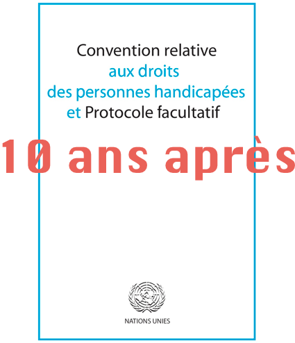

10 ans après sa ratification, la CDPH reste inconnue en France
Paru dans Francedisability le 18 Février 2020Le rapport inédit sur la privation arbitraire de la liberté liée au handicap pointe la situation alarmante en France
Paru dans Francedisability le 7 Octobre 201910 ans après sa ratification, la CDPH reste inconnue en France
Paru dans Francedisability 18 Février 2020
Le 18 Février 2010, la France a ratifié la
Convention Relative aux Droits des Personnes Handicapées (CDPH) ainsi que son
Protocol Facultatif, qui rends possible les recours devant le Comité de l’ONU pouvant statuer en cas de violation de la
Convention. En accord avec l’article 55 de la Constitution de la République Française, la CDPH s’impose au-dessus du droit
national et aucune mesure supplémentaire n’est nécessaire pour qu’elle soit prise en compte tant
dans les politiques publiques du handicap que dans les décisions juridiques. Cela est pourtant loin d’être le cas,
10 ans après la ratification de la Convention.
L’ancien député Denis Robillard, dans la préface du seul livre consacré à la CDPH (à son article 12 plus précisement) publié jusque là en France, dit que
personne n’a jamais mentionné ce traité dans les doléances qu’il a reçues en tant que président de la commission
parlementaire de la santé mentale1. En ce qui concerne le pouvoir exécutif actuel, le niveau de connaissance de ce
traité est proche de zéro : la Secrétaire aux personnes handicapées en a fait la démonstration, récemment sur son compte Twitter, en
présentant la CDPH comme un outil de la "facilitation de la vie quotidienne". Chez les associations, la croyance
que la Convention, "c’est pour avoir plus de places dans les institutions" est forte et cela suggère que, au bout du
compte, peu de Français ont lu le texte du traité. C’est d’ailleurs le constat que dresse la Rapporteuse Spéciale de
l’ONU dans son rapport : la Convention est ignorée à tous les niveaux de la société française. Jusqu’à ce jour, CDPH a
été citée dans sept arrêts d’instances juridiques supérieures (Cours d’Appel et Cour de Cassation).
Même si des textes explicatifs en français
existent, ainsi qu’un
rapport très détaillé du Conseiller à la Cour de Cassation Michel Blatman sur l’effet juridique
de la Convention, nous constatons qu’il y a un vrai et urgent besoin de travail d’explication et d’appropriation de
cet outil important.
La plus récente et la plus ambitieuse des Conventions de l'ONU
Il est communement admis que la Convention n’avait pas pour vocation d’introduire aucun nouveau droit, mais seulement de
(re)formuler les droits déjà existants, afin de les rendre accessibles aux personnes handicapées partant du constat
que jusqu’alors, ces dernières n’y avaient pas d’accès effectif. Ce faisant, le texte de la CDPH formule, de facto,
des droits qui n’ont été formulés nulle part par ailleurs :
- droit à l’aménagement raisonnable pour assurer l’accès aux droits et garantir que les personnes avec handicap aient
les mêmes opportunités que les personnes valides (préambule, articles 2 et 5). Le refus de l’aménagement raisonnable
est considéré comme une discrimination;
- l’égalité devant la loi et droit d'accès à la justice (articles 12 et 13): cette formulation rompt avec le principe de
la limitation de la capacité d'agir en droit admis dans la pluspart des juridiction;
- le droit à la vie dans la communauté et de ne pas être placé de force dans un lieu de vie à part (articles 14, 18 et
19): bien que la liberté d’aller et venir soit commune à tous les textes constitutifs, elle est de fait toujours
refusée à un grand nombre de personnes handicapées vivant dans les institutions;
- la protection de l’intégrité physique et mentale - interprétée par une partie des défenseurs des droits comme
interdiction de traitement médical sans consentement (articles 15 et 17);
Tous ces droits sont interdépendants : la liberté d’aller et venir et vivre dans la communauté n’ont de sens que quand
on possède la liberté de choix - la capacité juridique. La discrimination se vide de sens et devient une norme si,
dès le départ, les droits civiques (la capacité juridique en premier lieu) sont refusés à la personne.
La CDPH est la plus récente et la dernière à ce jours des Conventions de l’ONU des droits de l’homme : elle a bénéficié
de tous les développements précédents de la législation internationale. Une influence particulière - notamment dans la
définition de la notion de la discrimination - vient de la Convention pour les Droits et Egalité des Femmes. La CDPH a
été rédigée en un temps record - quatre ans - les négociations ayant été marquées par une solidarité forte entre
toutes les organisations des personnes handicapées (OPH) participant à la rédaction - fait lui-même exceptionnel dans
l’histoire du droit international. Dans l’affirmation du droit à la capacité juridique et la vie dans la communauté,
le consensus des OPH a donné lieu à des textes très forts et ambitieux, dans d’autres cas - comme le droit à
l’éducation - cela n’a pas permis d’affirmer clairement le droit opposable à l’éducation inclusive.
Une nouvelle conception de la personnalité
Le coeur et le plus grand accomplissement de la Convention est ce que Gerard Quinn - un des inspirateur du texte -
voit comme nouvelle définition de la personnalité (personhood)2 : non plus une unité isolée répondant
à des critères extérieurs de "raisonabilité" (et dans le cas contraire, étant relégué dans la catégorie des "demi -
capables", selon
l’expression d’un chercheur Français ) mais comme une personnalité à part entière avec sa propre raison
d’’être, reliée aux autres dans ce qu’on appelle aujourd’hui autonomie relationnelle. Bien évidemment, cette conception
est totalement incompatible avec le régime de la "protection" telle qu’on la connait en France (et dans la plupart
des autres pays), et avec avec la ségrégation institutionnelle.
La France, en signant le traité a formulé, selon les règles en vigueur, une réserve : celle ci concerne l’article 15
et plus précisément, la notion de "consentement" : celui-ci, selon les représentant français, peut être pris de
manière substitutive (par la personne chargée de la « protection »). Le texte de cette réserve manifeste clairement
le fossé entre la position française, reposant sur l’ancien modèle du handicap, médical et paternaliste, et le nouveau
paradigme porté par la Convention.
Cela peut expliquer qu’aucun - ou presque - pas en avant n’ait été fait en France depuis la ratification de la
Convention. La réforme de la capacité juridique n’arrive pas à voir le jour, l’institutionalisation des enfants et
adultes progresse, tout comme le traitement forcé et pratiques de torture, et la notion d’aménagement raisonnable est
réduite à des aides techniques, elles mêmes retardées dans leur mise en place. On peut croire que la portée du
changement a échappé à la France au début, et que, actuellement, mis devant l’évidence de l’incompatibilité de la situation
interne concernant le handicap et ses obligations internationales (entre autres, suite au rapport de la visite en France de
la Rapporteuse Spéciale de l’ONU), le gouvernement essaye de manœuvrer en mettant en avant la loi de 2005 (très lacunaire et
largement dépassée par la Convention); ou encore, en annonçant en grande pompe des mesures assez symboliques comme le
rétablissement du droit du vote pour tous (lequel, sans aménagements raisonnables - non prévus dans ce cas - restera lettre
morte dans la plupart des cas).
La France ne se rapproche pas de la Convention - cette dernière étant la somme de règles évolutives - elle s’en
éloigne. En ouvrant les unites ségréguées (appelées paradoxalement "unités d’inclusion"), en construisant plus
d’institutions, en adoptant des réformes qui enkystent encore plus la tutelle - le plus grand obstacle à l'effectivité
des droits. Alors que tout le monde se mobilise pour la loi 2005 - sans conséquences sur le respect des droits
fondamentaux - personne ne le fait pour la Convention.
La Convention ne doit pas seulement être lue, mais aussi analysée - y compris à travers son application dans la
jurisprudence - afin de ne pas devenir seulement une vague référence, mais un outil puissant de revendication du
respect des doits fondamentaux. C’est à cette tâche que nos articles ultérieurs vont être consacrés.
1. Hanon, Cécile and al., Choisir et agir pour autrui?: Controverse autour de la Convention de l'ONU relative aux
droits des personnes handicapées (polémiques) (Doin editions, 2018)
2. Quinn, Gerard Rethinking personhood: New directions in legal capacity law & policy: An ideas paper.
A public lecture at the University of British Columbia, Vancouver, 29 April 2011.
Le rapport inédit sur la privation arbitraire de la liberté liée au handicap pointe la situation alarmante en France
Paru dans Francedisability le 7 Octobre 2019
Le Rapport sur la Privation de Liberté Spécifique des Personnes Handicapées a été publié en Mai 2019 sur le site web du Centre du Droit du Handicap de l’Université de Galway (Irlande), dont l’équipe a conduit la recherche. Cette dernière a été sollicitée par le Comité des droits des Personnes Handicapées de l’ONU. Bien que la France fasse partie des pays cibles de la recherche, le rapport a été passé sous silence total par les médias français, y compris ceux consacrés au handicap.
Les divergences d'interprétation et le silence du plomb
Seulement trois associations en France ont relayé un autre rapport - celui de Catalina Devandas-Aguilar, basé en partie
sur cette recherche, et concernant le même problème de la privation de la liberté spécifique au handicap :
CLE Autistes,
Collectif Lutte et Handicaps pour l'Egalité et l'Emancipation (CLHEE) et Confcap. Il n’y a eu aucun écho médiatique,
aucune réaction de la Secrétaire pour des personnes handicapées, rien. De même, aucune volonté publique n’a été exprimée pour
traduire ce rapport en français.
Cela pourrait s'expliquer par le fait que la France n'est pas prête - y compris nombre d’associations de défense des
droits des personnes handicapées – à accepter la définition de la privation arbitraire de la liberté formulée dans
l'Observation Générale n°1 du Comité des droits des personnes handicapées de l'ONU (11ème session, 31 mars-11 avril
2014). Cette Observation a été rendue nécessaire suite au constat que le Comité, responsable du monitoring de
l’application de la Convention, a fait : la pleine capacité juridique mentionnée dans l’article 12 n’est toujours pas
respectée par la plupart des pays. Cela entraîne une privation arbitraire de liberté des personnes, privées de la
pleine jouissance de leurs droits et choix. Le Comité donne donc l’interprétation suivante de la capacité juridique:
“L’article 12 de la Convention relative aux droits des personnes handicapées indique clairement que des expressions
comme «ne jouit pas de toutes ses facultés» et autres étiquettes discriminatoires ne sauraient légitimement justifier
le déni de la capacité juridique (statut juridique et capacité d’agir en droit). En vertu de l’article 12 de la
Convention, une incapacité mentale réelle ou supposée ne saurait justifier le déni de la capacité juridique."
Et, dans la logique de cette vision, conformément à la Convention, le Comité affirme :
“Le déni de la capacité juridique des personnes handicapées et leur détention dans des établissements contre leur
volonté, sans leur consentement ou avec celui d’une personne habilitée à se substituer à elles pour prendre les
décisions les concernant, est un problème très actuel. Cette pratique constitue une privation arbitraire de liberté et
viole les articles 12 et 14 de la Convention. Les États parties doivent s’abstenir de telles pratiques et mettre en
place un mécanisme pour examiner les cas dans lesquels des personnes handicapées ont été placées dans un établissement
sans leur consentement exprès.”
La privation de liberté ne se passe forcément en prison : toute décision substitutive (prise par un tuteur) est, en
soi-même, une privation de liberté. La définition sur laquelle s'appui le rapport est suivante :
"Confinement à un espace restreint ou placement dans un établissement psychiatrique ou spécialisé, ou sous un contrôle
et supervision continue; absence de la liberté d'aller et venir; absence du consentement libre et éclairé donné par
la personne." (p.13)
C'est dans ce dernier élément que réside la difficulté d'acceptation par la France de cette nouvelle vision de la
liberté, intrinsèque à la CIDPH. Dans le commentaire officiel fait lors de la signature de la dernière, la France a
affirmé sa propre compréhension du consentement : soit la personne est jugée capable de le donner, soit il est donné
de manière substitutive. Dans la loi et en pratique, la personne est juge «incapable» sur la base d'une observation
ponctuelle par un psychiatre expert (aux compétences et convictions fort variables), et cela, le plus souvent
définitivement. Ce que signifie que toutes les décisions seront prises par une tierce personne, souvent étrangère à
la personne (selon le
récent rapport parlementaire, 75% des mandats de protection sont confiés à un mandataire professionnel).
Une des conséquences les plus graves et les plus fréquentes de la décision substitutive est le placement des personnes
handicapées en institutions, où la privation de la liberté se concrétise par la vie collective imposée, l’enfermement
physique, voire la contention chimique et physique. En France, la pratique de privation de la personne de toute
participation dans les décisions la concernant est la pierre angulaire du système des institutions, dominant et
financé par l’Etat. Et rien ne semble pouvoir l'ébranler, vu le rapport cité ci-haut.
Le manque des données commun et les dynamiques divergentes
La recherche du Centre du Galway a été menée en deux étapes : d’abord quinze pays (dont la France) ont été sélectionnés,
afin d’étudier les tendances générales et particulières. Le manque des données en général et dans tous les pays a été
jugé alarmant.
Pour la seconde étape, la situation dans cinq pays a été étudiée plus en profondeur : celle de la France, du Ghana,
de la Jordanie, de l’Indonésie et du Pérou. Alors que la première partie se concentrait sur des données statistiques,
pendant la deuxième étape, l’attention a été portée sur des cas et vécus individuels, afin de comprendre les causes
sous-jacentes de la situation dans chacun de ces pays.
On peut globalement résumer la situation comme étant éloignée, à des degrés variables, des principes fixés dans la
Convention, dont l’ensemble des quinze états sont pourtant signataires.
Plus particulièrement, et a contrario des idées reçues, les pays dits du «tiers-monde», ne diffèrent pas beaucoup
quant à la situation des personnes avec handicap, si ce n’est sur le plan strictement financier. La Moldavie, par
exemple, est citée comme l’exemple de la désinstitutionnalisation, au même titre que la Suède (p.101). Au Ghana, une
association mène un travail de réintégration des enfants handicapés dans la communauté. Au Mexique, chaque personne
handicapée est accompagnée, pour toutes les démarches juridiques, par une personne indépendante qui s’assure que
l’avis de la personne, de quelque façon, soit exprimé et entendu. Plus récemment, deux pays latino-américains - la
Colombie et le Pérou - ont introduit des réglementations sur la décision assistée qui se rapprochent le plus de
l’esprit et de la lettre de la Convention.
En effet, ce qui distingue les pays ayant servi l’objet de la recherche, c’est non pas tant leur niveau effectif
actuel de prise en compte de la Convention, que le processus engagé et les efforts déployés. A la lecture du rapport,
en toute objectivité, chacun pourrait conclure que la France est, manifestement, le seul pays où la situation, après
la ratification de la Convention ne s’est pas seulement rapprochée de l’esprit de celle-ci, mais s’en est éloignée :
la privation de la capacité juridique, prohibée par cette dernière, est désormais prononcée par des juges français
pour une durée de 10 ans (au lieu de 5 auparavant). La récente levée de la restriction du vote et du mariage
(postérieure à la rédaction du rapport) pour les personnes sous tutelle, reste une mesure assez formelle, voire
hypocrite, car nul ne pourrait prétendre qu’une personne, sédatée et vivant en institution, peut choisir son lieu
de vie, ses occupations, ses repas - souvent même ses vêtements - et encore moins a fortiori tirer un quelconque
profit des libertés concédées pour «satisfaire» l’ONU (qui n’est pas dupe pour autant).
Le nouveau paradigme de l'homme
La Convention de l’ONU hisse la notion de l’homme (en tant que composante de la formule «droits de l’homme»)à un
niveau jusque là peu appréhendé. Selon Gerard Quinn, ancien directeur du Centre de Galway et auteur de la préface du
rapport, elle vise à rompre avec le mythe
de la rationalité comme dimension exclusive de l’humain, en valorisant la complexité et la complémentarité de son devenir physique, psychique et social. L’homme ne se réduit pas au sujet
pensant (à l’exclusion de toute autre dimension), avec comme conséquence d’être l’objet des décisions des autres,
dès lors qu’il serait reconnu comme non raisonnable, et d’être alors privé de sa capacité humaine la plus distinctive
- la liberté. Cela suppose l’abandon du paradigme cartésien - cogito ergo sum - ou dimension exclusivement cognitive,
comme définition de l’humain. (
voir la publication source)
Dans l’article 12 de la Convention (le plus décisif et révolutionnaire de ce traité) la notion d’ «intérêt supérieur»
de la personne, comme pour les enfants, est abandonnée. Cette notion cède la place aux «volontés et préférences» de
la personne handicapée. Or, en France, cette notion de l’intérêt supérieur (rarement défini, et toujours mis en avant
par un tiers) reste un fondement inébranlable de la réflexion sociale, juridique et - paradoxalement - militante.
La France s’accroche à une vision paternaliste, considérant la personne majeure avec handicap cognitif ou psychique
comme une personne mineure. Nombre d’associations se réclamant de la défense des droits des personnes handicapées se
conforment à ce paradigme sans le remettre en cause. Beaucoup d’entre elles réclament alors «plus de places» (dans les
institutions), tout en remâchant, comme l’a fait récemment la présidente d’Autisme France, des propos sur le «haut
et bas du spectre autistique», en laissant supposer que les uns ne peuvent pas prétendre au même traitement que les
autres. Ce décrochage d’un mouvement plus général qui se dessine dans le monde est la French touch dans le domaine du
handicap. Les associations qui adhèrent à la vision de la Convention sont rares et - sans surprise - rarement
bénéficiaires du support financier de l’Etat.
La France compte une proportion très élevée de personnes «protégées» - personnes privées de la capacité juridique,
et donc, de liberté. C’est aussi pour cette raison, selon Eleonore Flynn, responsable du projet et actuelle directrice
du Centre à Galway, que la France a été choisie pour être analysée aux deux étapes de la recherche. Comparée aux
quatre autres pays du stade final de la recherche, tous pauvres - voir très pauvres - la France ne se distingue pas
favorablement.
Venant de loin, ces autres pays présentent des signes palpables d’une volonté de rejoindre la révolution portée par
la Convention : comme mentionné déjà, le Pérou a très récemment
adopté une législation exemplaire quant au respect de
la capacité juridique et sur la décision assistée, en supprimant la notion de discernement et en abolissant le
régime de la tutelle, exception faite pour des personne dans le coma et celles gravement dépendantes des drogues et
de l’alcool. Ce pays prohibe désormais la médication et l’hospitalisation sans consentement (sauf pour les exceptions
déjà mentionnées). En toute logique, le principe de la déclaration de l’irresponsabilité pénale pour des raisons de
handicap ou maladie est abandonnée.
La question de la responsabilité pénale, de la gestion des crises et de la primauté sécuritaire
Le rapport de l’équipe de Galway a d’ailleurs mis en évidence le lien, dans de nombreuses juridictions, entre le
principe de l’irresponsabilité pénale et la privation de la capacité juridique et de liberté : en effet, l’idée que
la responsabilité pénale est une partie indispensable de la pleine jouissance des droits, est une évidence. Plus
particulièrement, dans le contexte français, la décision juridique s’appuie, bien trop souvent sur l’avis des
psychiatres, établissant l'état du pouvoir psychiatrique (si brillament analysé par Michel Foucault) . Et si on se
souvient des errements liés à ce pouvoir (cl'affaire du «cannibale japonai” Issei Sagawa, pour ne mentionner qu’une
des plus médiatisées), on réalise à quel point la psychiatrisation du crime contribue simultanément à la
dé-responsabilisation des auteurs criminels et à la diabolisation de la maladie et du handicap mental. Contrairement
aux idées reçues, l’irresponsabilité pénale n’est pas une mesure humaniste : non seulement elle n’exempte pas la
personne handicapée qui a commis un délit de la privation de liberté (en hôpital psychiatrique plutôt qu’en prison)
mais elle est susceptible de priver, en amont, toute personne avec handicap cognitif ou psycho-social de la liberté à
vie, qu’elle ait ou non commis un crime (dangerosité présumée ou avérée).
La question de la gestion des situations des crises, selon le rapport, semble être le plus grand obstacle à la liberté
des personnes handicapés, en premier lieu ceux atteints de troubles mentaux et les autistes. La notion de dangerosité
présumée ( «pour soi même et pour autrui») est en effet systématiquement invoquée pour justifier les placements en
institutions fermées («sécurisées»). Sécurité et prédictibilité constituent le nouveau graal de la société - et pas
uniquement française, même si la France excelle ici : cela implique forcement l’intolérance à l’imprévisible. Dire que
l’acceptation de l’incertain constitue une condition pour la liberté des personnes désignées comme potentiellement
dangereuses choquera nombre de nos concitoyens, pour qui cette liberté ne vaut pas grande chose, en regard de leur
sécurité. Pourtant, toutes les données convergent : les personnes avec un handicap cognitif et les autistes ne
représentant aucun danger particulier. Même si, lors de possibles crises, elles sont capables de comportement agressif,
celui-ci n’implique que très rarement blessure et encore plus rarement la mort. La condition autistique, notamment,
n’a jamais été reconnue, par aucune cour de justice, être à l’origine d’un crime, à la différence, par exemple, d’une
alcoolisation : on ne retire pourtant pas l’alcool du marché ni n’enferme ceux qui en sont dépendants.
Pourquoi donc le handicap est-il un motif suffisant pour priver de liberté une personne innocente, et ce presque
toujours à vie? Cette situation de fait, qui résiste à toute logique et statistique, n’est-elle pas symptomatique de
l’irrationalité de notre société de «normaux»? Est-ce que ce n’est pas une telle société que l’on devrait considérer
comme dangereuse «pour elle-même et pour les autres», selon l’expression consacrée? Le rapport relève qu'une grande
tolérance et résignation autour de la privation de liberté basé sur le handicap sont caractéristiques du modèle médical
du handicap largement dominant en France. Nombre des participants de l'enquête ont évoqué les sauvegardes légales
accompagnant la privation de liberté, censées exclure le motif discriminatoire du handicap, en pleine contradiction
avec la réalité des faits (p. 92).
La réalité française de la privation arbitraire de liberté liée au handicap n’est plus acceptable - ni du point de
vue moral, ni du point de vue juridique : la France est censée respecter la Convention, comme sa propre Constitution
l’y oblige. Elle sera sommée de répondre à une (des) question(s) allant dans ce sens lors de son audition par le Comité
de l’ONU supervisant l’application de la Convention, en Mars 2020.
haut de page